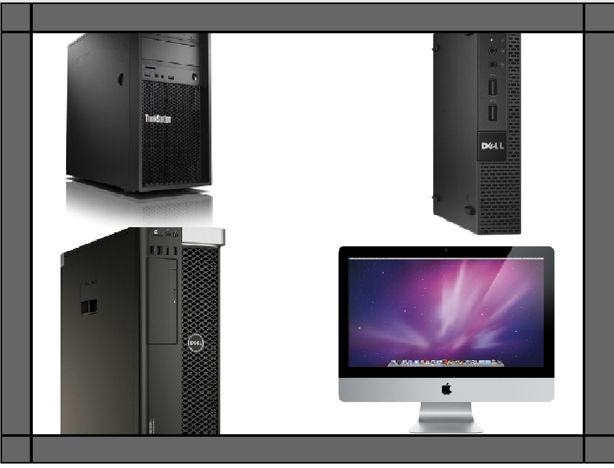
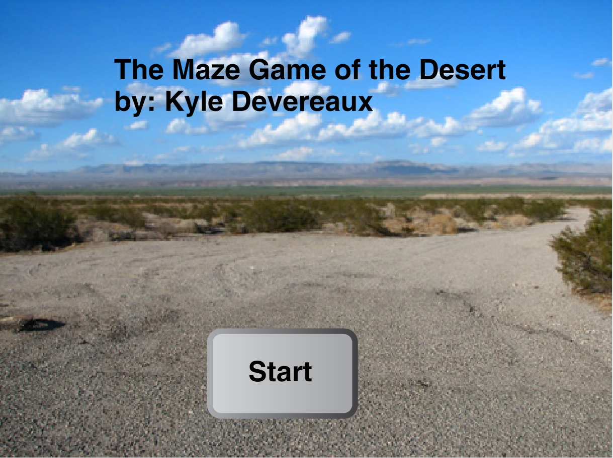

Scratch Content
Name Assignment

Description
We used the Scratch to design a program that shows my name. This program also required that the name be made of sprites, the letters have three different behaviors. All the letters must have a behavior of the same kind, and the use of "forever" and "green flag clicked" blocks is necessary.
Concepts Learned
- Using event blocks like "Green Flag Clicked".
- Loops like "Repeat Until" and "Forever" loops.
- Sprites used form the library.
- Movement: Changing the 'x' and 'y' coordinates, going to a specific coordinate in a specified time, spinning/turning the sprites.
Computer Buying Project
Description
We used Scratch to make a presentation on choosing a certain computer to buy. This decision was made by asking questions to someone and, with this information, select four computers as options. In the presentation it was required to show the specs/details of the four options, and in a creative way, show which option would be the best for the person who answered the questions.
Concepts Learned
- Custom sprites design including adding text to the sprites for descriptions.
- "When spacebar is pressed" to sense when to go to the next slide.
- "Wait" blocks for spacing time intervals.
Final Project
Description
We used Scratch to make either a story or a game (I chose game). For the game, the required actions were: having a timer, score, different levels (difficulties) and an end. A tutorial level is also required as a help page for beginners.
Concepts Learned
- Broadcasting between sprites.
- Creating custom blocks to organize code.
- Asking the user for a response to skip the tutorial.
- Sensing key movements for the movement of objects in the game.